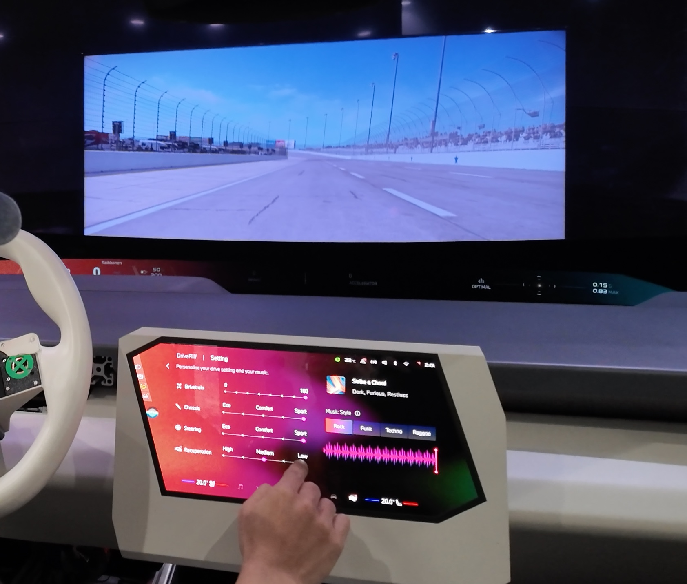

Abstract
The emergence of generative AI has sparked growing interest in Human-AI co-creation, enabling amateur users to compose music using tools such as Suno and Soundraw. However, limited research has empirically explored users’ perceptions and behaviors in Human-AI co-creation from a user-centered perspective. In this study, we investigate the interplay between users and a Human-AI co-creation system, focusing on the presence and attributes of instrumental music within a driving scenario. Initiated at BMW R&D Center (Shanghai), we designed “DriveRiff”—a Human-AI music co-creation system powered by Soundraw.io—that enables users to generate music in real-time through driving behaviors such as braking and accelerating. We further developed a fully functional prototype within a driving simulation lab. To operationalize users’ perceptions and behaviors, we conducted a lab-based user study in which participants drove while experiencing both traditionally human-composed and Human-AI co-created background music. In a mixed-design study (N=30), we examined two key research questions: (1) Does DriveRiff enhance users’ driving experience? We assessed this through emotional response, cognitive engagement, and aesthetic preference. (2) If and how does DriveRiff influence users’ driving behaviors? Our preliminary findings suggest that DriveRiff enhances driving pleasure and encourages users to diversify their driving behaviors intentionally for music creation. These insights provide empirical evidence supporting further exploration of Human-AI co-creation systems from a user-centered perspective within an industry context, potentially paving the way for broader commercial applications.

Role
Researcher, UX Designer, Prototyper
institution
BMW, Shanghai R&D Center
year
2024
KEY WORDS
Gen-AI, Music, User Behavior, Perception, Human-AI Co-creation
Programming language
Python
project link
↗ GitHub
Deliverables
Research, Full-functional interactive and tangible prototype
* Independent project (explored and completed by myself in the context and funding of BMW innovation projects)
1 | INTRODUCTION
Human-AI Co-Creation in Music Composition:
LLM-Based Approaches and Amateur-Friendly Tools
Large language models (LLMs) are reshaping AI-based music composition, moving beyond earlier recurrent networks and toward transformer architectures that capture richer musical semantics (Agostinelli et al., 2023; Facebook AI, 2023). This advance enables more flexible music generation, allowing users to provide text or symbolic prompts that guide the model’s output. As a result, modern co-creative systems have become highly adaptive to user preferences, even for those with minimal musical expertise.
Alongside these experimental research systems, a growing suite of industry-facing tools empowers amateur composers to create, refine, and export music at a near-professional standard. For instance, Soundraw offers an intuitive web interface where users select a musical style and duration (Figure1); an AI module then produces short compositions that can be further tweaked by adjusting mood, structure, and instrumentation (Soundraw, 2023). Suno’s Bark similarly allows novice users to create music by entering text-based prompts that encapsulate the desired musical style or emotion; the system, built on transformer-based language and audio modeling, generates novel pieces that can be edited or extended (Suno, 2023). Other platforms such as Boomy and AIVA employ prompt-driven workflows, enabling non-musicians to control genre, tempo, or instrumentation at a high level, while the system autonomously handles lower-level structural decisions.
The interaction paradigm of AI-generated music tools initiates our build-up of co-creative systems. Summarized as “prompt-tweaking” and “mixing” (Louie et al., 2020; Clark et al., 2023), it provides users with high-level prompts—genre, mood, or instrumentation—for AI-based composition. Through iterative adjustments (e.g., tempo, mixing layers), creators refine the output while retaining expressive control. This workflow underpins user acceptance, creative agency, and usability, especially in dynamic settings such as driving, where driver inputs (accelerating, braking) can modulate musical intensity on the fly. Although routine tasks (e.g., chord progressions) become automated, users often seek deeper influence over key musical elements (Clark et al., 2023; Zenieris, 2023), highlighting the challenge of balancing novelty and predictability under iterative feedback (Bougueng Tchemeube et al., 2023; Donahue et al., 2019). Within this context, our research examines how co-creative, LLM-based music systems affect drivers’ perception, cognition, and affect, as well as their in-the-moment driving behaviors in adaptive musical environments.
Figure1. Soundraw offers an intuitive web interface where users select a musical style and duration, an AI module then produces short compositions that can be further tweaked by adjusting mood, structure, and instrumentation.
2 | BACKGROUND
2.1 Empirical Study on Human-AI Co-creating Music
Although several empirical prototypes have examined how musical Human-AI co-creation influences user behavior and experiences in controlled environments (Louie et al., 2020; Ens & Pasquier, 2021; Roberts et al., 2019), few have done so from a fully user-centered perspective, and even fewer have considered highly dynamic scenarios such as driving. Typically, these studies position users in iterative feedback loops—tweaking generated content or selectively adopting AI suggestions—in ways that shape trust, reliance, and creative ownership (Amershi et al., 2019; Bougueng Tchemeube et al., 2023). For example, Magenta Studio (Roberts et al., 2019) integrates AI composition tools into a digital audio workstation, revealing how real-time generative models can alter user workflows. Similarly, Louie et al. (2020) underscore the importance of adjustable parameters for novice composers to embrace an active “co-creator” role. However, these systems primarily focus on stationary, desktop-based creative tasks rather than contexts where user actions and environmental factors co-evolve, such as in driving simulations.
Video1. "DriveRiff" enables user to real-time recreate music generated by AI by reacting with the simulator through standard driving inputs (accelerating, braking, steering)
2.2 Perception of AI-Generated Music
Empirical investigations into AI-generated music increasingly rely on frameworks that capture listeners’ subjective experiences—spanning emotional response, cognitive engagement, and aesthetic preference (Chu et al., 2022; Louie et al., 2020; Shank et al., 2022). Common methodologies include self-report surveys, physiological measurements of valence and arousal, and qualitative interviews evaluating how users perceive musical quality and originality (Zenieris, 2023). While these metrics have been applied in static or laboratory-based musical tasks, applying them to real-time, interactive scenarios—such as driving—adds complexity due to heightened cognitive load and safety considerations.
2.3 Impact of Human-AI Co-Creation Systems on User Behaviors
Prior work on Human-AI co-creation underscores the importance of usability, acceptance, and a sense of shared authorship (Amershi et al., 2019; Bougueng Tchemeube et al., 2023; Louie et al., 2020). Such acceptance often hinges on whether users feel the AI accurately conveys their creative intentions, facilitated through feedback loops ranging from basic UI elements to fully immersive musical interfaces (Ens & Pasquier, 2021). In driving simulations, where user behavior is sensitive to real-time cues, AI-generated music can potentially amplify or suppress driving tendencies (Rogers et al., 2019). By extending this paradigm, DriveRiff—initiated at the BMW R&D Center (Shanghai)—aligns musical adaptation with driver behavior (accelerating, braking, turning) to investigate co-creative influence on in-the-moment decisions. This dual emphasis on creative agency and situational awareness addresses a notable gap in the literature, positioning driving simulations as a robust testbed for studying how Human-AI co-creation systems steer user behavior, engagement, and acceptance under dynamic, high-stakes conditions.
3 | System Design: DriveRiff
3.1 Concept and Mechanism
Addressing identified research gaps, DriveRiff serves as a BMW co-creative music improviser that harnesses Soundraw.io for real-time adaptive composition. Users interact with the simulator through standard driving inputs (accelerating, braking, steering) (Video1)as well as a carefully designed, low-effort touch interface on the central display for managing music settings and mixing(Video2). By automatically capturing each input, DriveRiff adjusts key musical attributes—including instrumentation, timbre, and genre—thereby producing a soundtrack that evolves with driving behaviors. Central to the system is the idea that both deliberate maneuvers (e.g., rapid acceleration) and subtler patterns (e.g., maintaining steady speed) shape the AI-driven music, granting drivers partial authorship. By optimizing the central display’s user interface to require minimal attention, DriveRiff enables participants to remain immersed in the driving task while still exercising meaningful creative control. Ultimately, this design unites two traditionally distinct domains—safe driving and creative expression—under a single co-creative paradigm, seeking to enhance the driving experience by aligning it with music’s dynamic properties (Figure2).

Figure2. Carefully designed, low-effort touch interface on the central display and panoramic display for managing music settings and mixing.
3.2 Prototyping
To create a more immersive co-creative experience, we built a tangible simulation environment that incorporates a physical driver’s seat, driving pedals, a steering wheel, and both central and panoramic displays connected to Sony’s Project CARS on a PlayStation 4 (Figure3). This setup allows participants to drive in real time while experiencing adaptive music generated through our custom software prototype. The system’s backbone is implemented in Python, using SocketIO for bidirectional communication between a front-end interface (developed in ProtoPie) and our audio-processing backend. By tapping into the simulator’s state variables (e.g., speed, braking force), DriveRiff modulates various musical layers—bass, melody, drums—across multiple genres (Techno, Rock, Funk, Reggae) using PyGame’s mixer library.
Each genre is divided into multiple stems (e.g., soft vs. strong drum patterns, basic vs. “plus” melodic lines), each assigned to a dedicated audio channel. As driver behavior changes—accelerating, braking, or cruising—DriveRiff updates channel volumes or toggles melodic stems to reflect real-time speed thresholds. For instance, at low speeds, the system lowers melodic complexity, while surpassing certain acceleration thresholds activates fuller layers and additional instrument tracks. The code snippet above demonstrates how socket callbacks adjust volumes, switch channels, or enable new tracks when the driver crosses predefined speed levels. This granular layering strategy aligns the musical output with nuanced driving patterns, encouraging users to experiment with different maneuvers to generate distinct sonic outcomes.
Physically, participants perceive these changes through a seat and steering assembly that replicate standard automobile controls, combined with an on-screen road simulation and a panoramic head-up display. Meanwhile, a central touchscreen interface lets users switch between genres or fine-tune certain mix parameters, effectively uniting safe driving and creative music exploration under a single prototype. By maintaining low-latency communication via SocketIO, DriveRiff continuously synchronizes audio feedback with driver inputs, providing a real-time co-creative experience that bridges automotive behavior and generative music composition.

Figure3. Prototype Set-up
Socket Communication with Protopie
io = socketio.Client()
@io.on('connect')
def on_connect():
print('[SOCKERIO] Connected to server')
io.emit('ppBridgeApp', {'name': 'python'})
@io.on('ppMessage')
def on_message(data):
messageId = data['messageId']
value = data['value'] if 'value' in data else None
print('[SOCKERIO] Receive a Message from connect', data)
if (messageId == "PLAY_MUSIC"):
play_music()
if (messageId == "STOP_MUSIC"):
stop_music()
if (messageId == "SPEED"):
update_music(value)
io.connect(address)Sound Channel Assignment
pygame.mixer.init()
pygame.mixer.set_num_channels(40)
print(pygame.mixer.get_num_channels())
# define channel for techno
techno_bass_1 = pygame.mixer.Sound('./Sound_Tracks/Techno_bass_decreased.MP3')
techno_bass_2 = pygame.mixer.Sound('./Sound_Tracks/Techno_bass_basic.mp3')
techno_bass_3 = pygame.mixer.Sound('./Sound_Tracks/Techno_bass_plus.MP3')
techno_melody_1 = pygame.mixer.Sound('./Sound_Tracks/Techno_melody_soft.MP3')
techno_melody_2 = pygame.mixer.Sound('./Sound_Tracks/Techno_melody_strong.MP3')
techno_drum_1 = pygame.mixer.Sound('./Sound_Tracks/Techno_drum_soft.MP3')
techno_drum_2 = pygame.mixer.Sound('./Sound_Tracks/Techno_drum_strong.MP3')
techno_backing1 = pygame.mixer.Sound('./Sound_Tracks/Techno_backing_soft.MP3')
channel_techno_bass1 = pygame.mixer.Channel(0)
channel_techno_bass2 = pygame.mixer.Channel(1)
channel_techno_bass3 = pygame.mixer.Channel(2)
channel_techno_melody1 = pygame.mixer.Channel(3)
channel_techno_melody2 = pygame.mixer.Channel(4)
channel_techno_drum1 = pygame.mixer.Channel(5)
channel_techno_drum2 = pygame.mixer.Channel(6)
channel_techno_backing1 = pygame.mixer.Channel(28)
# define channel for rock
rock_bass_1 = pygame.mixer.Sound('./Sound_Tracks/Rock_bass_decreased.MP3')
rock_bass_2 = pygame.mixer.Sound('./Sound_Tracks/Rock_bass_basic.MP3')
rock_bass_3 = pygame.mixer.Sound('./Sound_Tracks/Rock_bass_plus.MP3')
rock_backing_1 = pygame.mixer.Sound('./Sound_Tracks/Rock_backing.MP3')
rock_backing_plus = pygame.mixer.Sound('./Sound_Tracks/Rock_backing_plus.MP3')
rock_melody_1 = pygame.mixer.Sound('./Sound_Tracks/rock_melody_soft_long.MP3')
rock_melody_2 = pygame.mixer.Sound('./Sound_Tracks/Rock_melody_strong.MP3')
rock_melody_plus_1 = pygame.mixer.Sound('./Sound_Tracks/Rock_melody_plus_soft.MP3')
rock_melody_plus_2 = pygame.mixer.Sound('./Sound_Tracks/Rock_melody_plus_strong.MP3')
rock_drum_1 = pygame.mixer.Sound('./Sound_Tracks/rock_drum_soft_long.MP3')
rock_drum_2 = pygame.mixer.Sound('./Sound_Tracks/rock_drum_strong_long.MP3')
channel_rock_bass_1 = pygame.mixer.Channel(7)
channel_rock_bass_2 = pygame.mixer.Channel(8)
channel_rock_bass_3 = pygame.mixer.Channel(9)
channel_rock_backing_1 = pygame.mixer.Channel(10)
channel_rock_backing_plus = pygame.mixer.Channel(11)
channel_rock_melody_1 = pygame.mixer.Channel(12)
channel_rock_melody_2 = pygame.mixer.Channel(13)
channel_rock_melody_plus_1 = pygame.mixer.Channel(14)
channel_rock_melody_plus_2 = pygame.mixer.Channel(15)
channel_rock_drum_1 = pygame.mixer.Channel(16)
channel_rock_drum_2 = pygame.mixer.Channel(17)
# define channel for Funk
funk_bass_1 = pygame.mixer.Sound('./Sound_Tracks/funk_bass_decreased.MP3')
funk_bass_2 = pygame.mixer.Sound('./Sound_Tracks/funk_bass_basic.MP3')
funk_bass_3 = pygame.mixer.Sound('./Sound_Tracks/funk_bass_plus.MP3')
funk_backing_1 = pygame.mixer.Sound('./Sound_Tracks/funk_backing_soft.MP3')
funk_backing_plus = pygame.mixer.Sound('./Sound_Tracks/funk_plus_backing_strong.MP3')
funk_melody_1 = pygame.mixer.Sound('./Sound_Tracks/funk_melody_plus_soft.MP3')
funk_melody_plus = pygame.mixer.Sound('./Sound_Tracks/funk_melody_strong.MP3')
funk_drum_1 = pygame.mixer.Sound('./Sound_Tracks/funk_drum_soft.MP3')
funk_drum_2 = pygame.mixer.Sound('./Sound_Tracks/funk_drum_strong.MP3')
channel_funk_bass_1 = pygame.mixer.Channel(18)
channel_funk_bass_2 = pygame.mixer.Channel(19)
channel_funk_bass_3 = pygame.mixer.Channel(20)
channel_funk_backing_1 = pygame.mixer.Channel(21)
channel_funk_backing_plus = pygame.mixer.Channel(22)
channel_funk_melody_1 = pygame.mixer.Channel(23)
channel_funk_melody_2 = pygame.mixer.Channel(24)
channel_funk_drum_1 = pygame.mixer.Channel(25)
channel_funk_drum_2 = pygame.mixer.Channel(26)
# define channel for Reggae
reggae_bass_1 = pygame.mixer.Sound('./Sound_Tracks/Raggae_bass_1.MP3')
reggae_bass_2 = pygame.mixer.Sound('./Sound_Tracks/Raggae_bass_2.MP3')
reggae_bass_3 = pygame.mixer.Sound('./Sound_Tracks/Raggae_bass_4.MP3')
reggae_backing_1 = pygame.mixer.Sound('./Sound_Tracks/Raggae_backing_1.MP3')
reggae_backing_2 = pygame.mixer.Sound('./Sound_Tracks/Raggae_backing_2.MP3')
reggae_drum_1 = pygame.mixer.Sound('./Sound_Tracks/Raggae_drum_1.MP3')
reggae_melody_1 = pygame.mixer.Sound('./Sound_Tracks/Raggae_melody_1.MP3')
reggae_melody_2 = pygame.mixer.Sound('./Sound_Tracks/Raggae_melody_2.MP3')
reggae_backing_plus = pygame.mixer.Sound('./Sound_Tracks/Raggae_backing_plus_1.MP3')
reggae_melody_plus_1 = pygame.mixer.Sound('./Sound_Tracks/Raggae_melody_plus_1.MP3')
reggae_melody_plus_2 = pygame.mixer.Sound('Raggae_melody_plus2.MP3')
reggae_drum_plus_1 = pygame.mixer.Sound('./Sound_Tracks/Raggae_drum_plus_1.MP3')
reggae_drum_plus_2 = pygame.mixer.Sound('./Sound_Tracks/Raggae_drum_plus_2.MP3')
channel_reggae_bass_1 = pygame.mixer.Channel(27)
channel_reggae_bass_2 = pygame.mixer.Channel(28)
channel_reggae_bass_3 = pygame.mixer.Channel(29)
channel_reggae_backing_1 = pygame.mixer.Channel(30)
channel_reggae_backing_2 = pygame.mixer.Channel(31)
channel_reggae_drum_1 = pygame.mixer.Channel(32)
channel_reggae_drum_plus_1 = pygame.mixer.Channel(33)
channel_reggae_drum_plus_2 = pygame.mixer.Channel(39)
channel_reggae_backing_plus = pygame.mixer.Channel(34)
channel_reggae_melody_1 = pygame.mixer.Channel(35)
channel_reggae_melody_2 = pygame.mixer.Channel(36)
channel_reggae_melody_plus_1 = pygame.mixer.Channel(37)
channel_reggae_melody_plus_2 = pygame.mixer.Channel(38)Customizable Intensity Control
def update_volume_reggae(driving_setting):
driving_setting = 0.8 * float(driving_setting)
channel_reggae_backing_1.set_volume(0)
channel_reggae_backing_2.set_volume(0)
channel_reggae_drum_1.set_volume(0)
channel_reggae_drum_plus_1.set_volume(0)
channel_reggae_drum_plus_2.set_volume(0)
channel_reggae_backing_plus.set_volume(0)
channel_reggae_melody_1.set_volume(0)
channel_reggae_melody_2.set_volume(0)
channel_reggae_melody_plus_1.set_volume(0)
channel_reggae_melody_plus_2.set_volume(0)
if driving_setting < 41:
channel_reggae_bass_1.set_volume(1)
channel_reggae_bass_2.set_volume(0.3 * driving_setting / 100)
channel_reggae_bass_3.set_volume(0)
if 40 < driving_setting < 81:
channel_reggae_bass_1.set_volume(driving_setting / 100)
channel_reggae_bass_2.set_volume(1)
if driving_setting < 60:
channel_reggae_bass_3.set_volume(0)
else:
channel_reggae_bass_3.set_volume(0.5 * driving_setting / 100)
if 80 < driving_setting < 99:
channel_reggae_bass_1.set_volume(0)
channel_reggae_bass_2.set_volume(1 - (driving_setting / 100))
channel_reggae_bass_3.set_volume(driving_setting / 100)
if driving_setting > 98:
channel_reggae_bass_3.set_volume(1)Real-Time Music Mixing
def play_reggae():
channel_reggae_bass_1.play(reggae_bass_1, loops=-1)
channel_reggae_bass_2.play(reggae_bass_2, loops=-1)
channel_reggae_bass_3.play(reggae_bass_3, loops=-1)
channel_reggae_backing_1.play(reggae_backing_1, loops=-1)
channel_reggae_backing_2.play(reggae_backing_2, loops=-1)
channel_reggae_backing_plus.play(reggae_backing_plus, loops=-1)
channel_reggae_melody_1.play(reggae_melody_1, loops=-1)
channel_reggae_melody_2.play(reggae_melody_2, loops=-1)
channel_reggae_melody_plus_1.play(reggae_melody_plus_1, loops=-1)
channel_reggae_melody_plus_2.play(reggae_melody_plus_2, loops=-1)
channel_reggae_drum_1.play(reggae_drum_1, loops=-1)
channel_reggae_drum_plus_1.play(reggae_drum_plus_1, loops=-1)
channel_reggae_drum_plus_2.play(reggae_drum_plus_2, loops=-1)
def stop_reggae():
channel_reggae_bass_1.stop()
channel_reggae_bass_2.stop()
channel_reggae_bass_3.stop()
channel_reggae_backing_1.stop()
channel_reggae_backing_2.stop()
channel_reggae_backing_plus.stop()
channel_reggae_melody_1.stop()
channel_reggae_melody_2.stop()
channel_reggae_melody_plus_1.stop()
channel_reggae_melody_plus_2.stop()
channel_reggae_drum_1.stop()
channel_reggae_drum_plus_1.stop()
channel_reggae_drum_plus_2.stop()
def update_music_reggae(speed):
speed = int(speed)
if channel_reggae_bass_3.get_volume() > 0:
if speed < 11:
channel_reggae_backing_1.set_volume(0)
channel_reggae_backing_2.set_volume(0)
channel_reggae_drum_1.set_volume(0)
channel_reggae_drum_plus_1.set_volume(0)
channel_reggae_drum_plus_2.set_volume(0)
channel_reggae_backing_plus.set_volume(0)
channel_reggae_melody_1.set_volume(0)
channel_reggae_melody_2.set_volume(0)
channel_reggae_melody_plus_1.set_volume(0)
channel_reggae_melody_plus_2.set_volume(0)
if 10 < speed < 31:
channel_reggae_backing_1.set_volume(0)
channel_reggae_backing_2.set_volume(0)
channel_reggae_drum_1.set_volume(0)
channel_reggae_drum_plus_1.set_volume(0)
channel_reggae_drum_plus_2.set_volume(0)
channel_reggae_backing_plus.set_volume(1)
channel_reggae_melody_1.set_volume(0)
channel_reggae_melody_2.set_volume(0)
channel_reggae_melody_plus_1.set_volume(0)
channel_reggae_melody_plus_2.set_volume(0)
if 30 < speed < 51:
channel_reggae_backing_1.set_volume(0)
channel_reggae_backing_2.set_volume(0)
channel_reggae_drum_1.set_volume(0)
channel_reggae_drum_plus_1.set_volume(1)
channel_reggae_drum_plus_2.set_volume(0)
channel_reggae_melody_1.set_volume(0)
channel_reggae_melody_2.set_volume(0)
channel_reggae_melody_plus_1.set_volume(0)
channel_reggae_melody_plus_2.set_volume(0)
if 50 < speed < 71:
channel_reggae_backing_1.set_volume(0)
channel_reggae_backing_2.set_volume(0)
channel_reggae_drum_1.set_volume(0)
channel_reggae_drum_plus_2.set_volume(0)
channel_reggae_melody_1.set_volume(0)
channel_reggae_melody_2.set_volume(0)
channel_reggae_melody_plus_1.set_volume(0.4)
channel_reggae_melody_plus_2.set_volume(0)
if 70 < speed < 81:
channel_reggae_backing_1.set_volume(0)
channel_reggae_backing_2.set_volume(0)
channel_reggae_drum_1.set_volume(0)
channel_reggae_drum_plus_2.set_volume(1)
channel_reggae_melody_1.set_volume(0)
channel_reggae_melody_2.set_volume(0)
channel_reggae_melody_plus_2.set_volume(0)
if speed > 80:
channel_reggae_backing_1.set_volume(0)
channel_reggae_backing_2.set_volume(0)
channel_reggae_drum_1.set_volume(0)
channel_reggae_melody_1.set_volume(0)
channel_reggae_melody_2.set_volume(0)
channel_reggae_melody_plus_2.set_volume(0.6)
else:
if speed < 10:
channel_reggae_backing_1.set_volume(0)
channel_reggae_backing_2.set_volume(0)
channel_reggae_drum_1.set_volume(0)
channel_reggae_drum_plus_1.set_volume(0)
channel_reggae_drum_plus_2.set_volume(0)
channel_reggae_backing_plus.set_volume(0)
channel_reggae_melody_1.set_volume(0)
channel_reggae_melody_2.set_volume(0)
channel_reggae_melody_plus_1.set_volume(0)
channel_reggae_melody_plus_2.set_volume(0)
if 9 < speed < 31:
channel_reggae_backing_1.set_volume(1)
channel_reggae_backing_2.set_volume(0)
channel_reggae_drum_1.set_volume(0)
channel_reggae_drum_plus_1.set_volume(0)
channel_reggae_drum_plus_2.set_volume(0)
channel_reggae_backing_plus.set_volume(0)
channel_reggae_melody_1.set_volume(0)
channel_reggae_melody_2.set_volume(0)
channel_reggae_melody_plus_1.set_volume(0)
channel_reggae_melody_plus_2.set_volume(0)
if 30 < speed < 51:
channel_reggae_backing_2.set_volume(0)
channel_reggae_drum_1.set_volume(1)
channel_reggae_drum_plus_1.set_volume(0)
channel_reggae_drum_plus_2.set_volume(0)
channel_reggae_backing_plus.set_volume(0)
channel_reggae_melody_1.set_volume(0)
channel_reggae_melody_2.set_volume(0)
channel_reggae_melody_plus_1.set_volume(0)
channel_reggae_melody_plus_2.set_volume(0)
if 50 < speed < 71:
channel_reggae_backing_2.set_volume(0)
channel_reggae_drum_plus_1.set_volume(0)
channel_reggae_backing_plus.set_volume(0)
channel_reggae_drum_plus_2.set_volume(0)
channel_reggae_melody_1.set_volume(1)
channel_reggae_melody_2.set_volume(0)
channel_reggae_melody_plus_1.set_volume(0)
channel_reggae_melody_plus_2.set_volume(0)
if 70 < speed < 81:
channel_reggae_backing_2.set_volume(1)
channel_reggae_drum_plus_1.set_volume(0)
channel_reggae_drum_plus_2.set_volume(0)
channel_reggae_backing_plus.set_volume(0)
channel_reggae_melody_2.set_volume(0)
channel_reggae_melody_plus_1.set_volume(0)
channel_reggae_melody_plus_2.set_volume(0)
if speed > 80:
channel_reggae_drum_plus_1.set_volume(0)
channel_reggae_drum_plus_2.set_volume(0)
channel_reggae_backing_plus.set_volume(0)
channel_reggae_melody_2.set_volume(1)
channel_reggae_melody_plus_1.set_volume(1)
channel_reggae_melody_plus_2.set_volume(0)
@io.on('connect')
def on_connect():
print('[SOCKERIO] Connected to server')
io.emit('ppBridgeApp', {'name': 'python'})
@io.on('ppMessage')
def on_message(data):
message_id = data['messageId']
value = data['value'] if 'value' in data else None
print('[SOCKERIO] Receive a Message from connect', data)
speed_pre = 0
# game initially start with rock
if message_id == "START":
init_volume_rock()
if message_id == "SETTING_RAGGAE":
update_volume_reggae(driving_setting=value)
if message_id == "SETTING_TECHNO":
update_volume_techno(driving_setting=value)
if message_id == "SETTING_ROCK":
update_volume_rock(driving_setting=value)
if message_id == "SETTING_FUNK":
update_volume_funk(driving_setting=value)
if message_id == "PLAY_RAGGAE":
update_volume_reggae(driving_setting=value)
play_reggae()
if message_id == "PLAY_TECHNO":
update_volume_techno(driving_setting=value)
play_techno()
if message_id == "PLAY_ROCK":
play_rock()
if message_id == "PLAY_FUNK":
update_volume_funk(driving_setting=value)
play_funk()
if message_id == "STOP_FUNK":
stop_funk()
if message_id == "STOP_TECHNO":
stop_techno()
if message_id == "STOP_ROCK":
stop_rock()
if message_id == "STOP_RAGGAE":
stop_reggae()
if message_id == "speed_techno":
update_music_techno(speed=value)
if message_id == "speed_rock":
update_music_rock(speed=value)
if message_id == "speed_funk":
update_music_funk(speed=value)
if message_id == "speed_reggae":
update_music_reggae(speed=value)
# if message_id == "SEND_SPEED":
# speed_cur = float(value)
# acc = speed_cur - speed_pre
# io.emit('ppMessage', {'messageId': "ACC", 'value': acc})
# time.sleep(0.5)
# speed_pre = speed_cur
# print(speed_pre, speed_cur)
io.connect(address)
io.wait()
↗ Watch Full Project Code
4 | Methodology
4.1 Research Questions
Recent literature on Human-AI co-creation highlights how interactive music can enhance immersion, emotional engagement, and perceived ownership of creative processes (Louie et al., 2020; Ens & Pasquier, 2021; Chu et al., 2022). However, most studies focus on static or desktop-based environments, overlooking dynamic, high-stakes settings like driving, where environmental cues and user actions co-evolve rapidly (Rogers et al., 2019; Brodsky, 2020). This gap leaves open the fundamental question of whether AI-generated music, integrated with real-time driving inputs, can measurably enrich user experience and alter driver decisions or behaviors.Given the substantial potential for music to affect user perception and behavior, we investigate whether a Human-AI co-creation system—DriveRiff—could both enhance the subjective driving experience and shape driving patterns.
Specifically, we explore two research questions. First, does DriveRiff enhance users’ driving experience? We examine emotional response, cognitive engagement, and aesthetic preference when drivers alternate between AI-adaptive and traditional human-composed music. Second, how does DriveRiff influence drivers’ behavior? By analyzing speed variations, braking intensity, and steering dynamics, we aim to understand whether real-time musical adaptation prompts drivers to experiment with their driving style.
Our work offers a novel angle on how co-creative music systems might serve as an interactive medium that not only fosters creative satisfaction but also subtly guides in-the-moment behaviors. Establishing these links could inform future vehicle interface design, where adaptive AI-driven music might elevate user satisfaction, encourage safer or more eco-friendly driving habits, or be harnessed for broader in-car experiences.
4.2 User Study
4.2.1 Participants
A total of N = 30 participants (18 male, 12 female) took part in the study. All participants were internal employees at BMW R&D Center (Shanghai), recruited from various departments, including design, engineering, and user experience teams. Given the preliminary nature of this study and security considerations, recruitment was restricted to internal staff. Participants’ ages ranged from 26 to 45 (M = 34.2, SD = 5.6). While all participants had prior driving experience, their familiarity with AI-generated music and co-creative systems varied. None of the participants had formal training in music composition, ensuring that the study focused on real-world, non-expert user interactions with DriveRiff(Figure4&5).
4.2.2 Measures
To evaluate the impact of DriveRiff on both subjective driving experience and driving behavior, we employed a combination of self-report measures and behavioral driving metrics. These measures were selected based on prior research on Human-AI co-creation (Louie et al., 2020; Ens & Pasquier, 2021) and the known effects of music on driving performance and user engagement (Brodsky, 2020; Rogers et al., 2019). Our approach ensured a balanced examination of both perceived experience and actual driving outcomes within the controlled lab environment. All subjective measures were collected via a post-driving questionnaire, administered after each session to avoid priming effects between conditions.
Perception
Emotional Response
Arousal (Intensity)
Arousal was evaluated on a 7-point Likert scale (calm to energetic), and valence was assessed on a 7-point Likert scale (unpleasant to uplifting). Participants also selected from emotion labels (e.g., happiness, excitement, tension) to capture nuanced affective reactions.
Valence (Pleasantness)
Valence was assessed using a 7-point Likert scale ranging from negative (unpleasant, tense) to positive (pleasant, uplifting). This measure evaluates the extent to which participants experienced positive or negative emotions in response to the music.
Aesthetic Preference
Participants selected one or more emotions from a predefined set that best described their response to the music. The emotion categories included happiness, excitement, relaxation, tension, focus, boredom, and frustration, among others. This categorical approach enables a more nuanced understanding of how AI-generated music influences emotional states beyond arousal and valence dimensions.
--------------------------------
Cognitive Engagement
Attention Level
Attention level was assessed using a 7-point Likert scale ranging from low engagement (distracted, disengaged) to high engagement (absorbed, highly focused). This measure captures the degree to which participants felt cognitively immersed in the music while driving, reflecting their ability to stay engaged without excessive distraction.
Anticipation and Predictability
Anticipation was evaluated using a 7-point Likert scale ranging from highly predictable (expected, repetitive) to highly surprising (dynamic, unexpected changes). This measure examines whether participants perceived the AI-generated music as intuitively structured or unpredictably evolving, which could influence their driving engagement and responsiveness.
--------------------------------
Likeability
Likeability was measured using a 7-point Likert scale ranging from low preference (disliked, unappealing) to high preference (liked, enjoyable, loved). This measure evaluates the overall appeal of the AI-generated music compared to human-composed tracks, capturing user enjoyment and preference.
Flow State (Immersive Experience)
Flow state was assessed using a 7-point Likert scale ranging from low immersion (detached, aware of time) to high immersion (fully absorbed, lost track of time). This measure examines the extent to which participants felt engaged and immersed in the music, reflecting how well the co-creative system contributed to an uninterrupted driving experience.
Perceived Aesthetic Quality
Perceived aesthetic quality was rated on a 7-point Likert scale ranging from poor (low-quality, unpleasant) to excellent (high-quality, artistically appealing). This measure evaluates the subjective perception of the AI-generated music’s composition, richness, and coherence, offering insights into how users judge the artistic merit of dynamically adapted music.
--------------------------------
Interplay and Behaviors
Speed and Acceleration Patterns
Logged at 50ms intervals, capturing mean speed, variance, and acceleration spikes.
Braking Intensity
Categorized braking events (light, moderate, heavy) to detect abrupt stops aimed at influencing the music.
Intentional Steering Variations
Examined steering angle changes to identify if participants “weaved” to prompt new melodic or rhythmic layers.
4.2.3 Procedures
For the main user study, sessions began with a briefing session where participants were introduced to the purpose of the study and the functionality of the DriveRiff system. After providing informed consent, participants were seated in the driving simulator, which included a physical driver’s seat, steering wheel, pedals, and panoramic displays connected to Project CARS on PlayStation 4.
Participants completed two driving sessions, each lasting 5 minutes, under the following conditions:
Human-Composed Background Music – A curated, non-adaptive music playlist.
Human-AI Co-Created Background Music – AI-generated music that dynamically adapted to real-time driving inputs.
The order of conditions was counterbalanced across participants to mitigate potential sequence effects. During both sessions, real-time driving behavior metrics (speed, acceleration, braking intensity, and lane changes) were continuously logged at 50ms intervals.
After each session, participants completed a post-driving questionnaire, measuring emotional response (arousal, valence, discrete emotions), cognitive engagement (attention, predictability), and aesthetic preference (likeability, immersion, perceived quality). Once both sessions were completed, a semi-structured interview was conducted, allowing participants to reflect on their experience, discuss perceived control over the AI-generated music, and describe any intentional modifications to their driving in response to the musical adaptation.Each study session lasted approximately 40–50 minutes, including briefing, driving, surveys, and interviews. Participants received a small incentive for their time.

Figure4. User Study in Lab Environment with driving simulation

Figure5. User Study in Lab Environment for further mixing and music adjustment
4.3 On-going Data Analysis
Although Sections 4.2 and 4.3 present our preliminary measures and early analysis results, the full data synthesis for this study remains incomplete. We are in the process of merging our qualitative and quantitative datasets to gain a more comprehensive view of participant experiences and driving behaviors under different music conditions. This next phase will involve:Refining Statistical Models: We plan to explore more detailed interaction effects, including how participants’ demographic backgrounds (e.g., department, prior familiarity with AI music) might moderate responses to DriveRiff’s adaptive tracks.Longitudinal Perspectives: We aim to compare participants’ first impressions with subsequent sessions or follow-up tests, investigating whether initial novelty diminishes or if deeper co-creative engagement emerges over time.Extended Qualitative Thematics: Building on early interview themes (e.g., co-creative agency, novelty, safety concerns), we will apply more rigorous thematic coding to fully map out user perceptions and design implications.Until these steps are finalized, our interpretations should be viewed as provisional. The integrated findings—encompassing user acceptance, safety, and creative agency—will be reported in a subsequent study once the data synthesis is complete.
5 | Expected results and Contributions
While the project’s final outcomes await completion of the ongoing data synthesis, our preliminary evidence suggests that AI-driven adaptive music can enrich driving experiences and subtly guide users’ driving patterns. Specifically, participants reported heightened arousal and a sense of “co-composer” agency under the Human-AI co-creationcondition, alongside a modest but significant increase in driving variations (e.g., speed variance, occasional steering changes). These early trends point to DriveRiff’s potential for uniting creative expression with real-world automotive design, provided that further testing ensures safety and sustainable user engagement.
Anticipated Future Contributions
Extended User-Centered Insights: By completing the data synthesis, we aim to offer a holistic portrayal of how drivers experience AI-adaptive music over time, including potential shifts in risk tolerance, long-term acceptance, and emergent co-creative patterns.
Refined Co-Creative Framework: Our iterative design approach will inform best practices for integrating co-creative, real-time AI composition into contexts beyond typical “desktop” creativity—especially in domains that demand continuous user attention and situational awareness.
Ethical and Safety Guidelines: As we further analyze potential distractions, user reliance, and agency, we plan to establish guidelines and design checkpoints that balance creative freedom with safe driving behaviors.
Practical Automotive Applications: By merging user preferences with real-time driving feedback, DriveRiff exemplifies how human-centered AI might evolve in-vehicle infotainment systems toward more interactive and adaptive experiences, possibly extending to eco-driving cues, stress management, or driver well-being.
In closing, our ongoing research contributes to the nascent field of Human-AI co-creation by exploring how AI-composed music can foster not only creative satisfaction but also distinctive behavioral patterns in an automotive simulator context. By finalizing our data synthesis, we hope to validate these preliminary insights and guide the design of future co-creative systems that enrich everyday tasks, such as driving, through responsibly harnessed AI-driven interactivity.
Reference
Agostinelli, F., et al. (2023). MusicLM: Generating High-Fidelity Music from Text Descriptions. arXiv preprint arXiv:2301.11325.
Amershi, S., Weld, D., Vorvoreanu, M., Fourney, A., Nushi, B., Collisson, P., … & Horvitz, E. (2019). Guidelines for human–AI interaction. Proceedings of the SIGCHI Conference on Human Factors in Computing Systems, 1–13.
Bougueng Tchemeube, R., Ens, J., Plut, C., & Pasquier, P. (2023). Evaluating Human-AI Interaction via Usability, User Experience and Acceptance Measures for MMM-C: A Creative AI System for Music Composition. International Joint Conference on Artificial Intelligence (IJCAI).
Bradley, M. M., & Lang, P. J. (1994). Measuring emotion: The self-assessment manikin and the semantic differential. Journal of Behavior Therapy and Experimental Psychiatry, 25(1), 49–59.
Brodsky, W. (2020). The effects of music on driving performance: A study on tempo and risk-taking. Journal of Music Psychology, 45(3), 234–256.
Chu, H., Kim, J., Kim, S., Lim, H., & Lee, H. (2022). An Empirical Study on How People Perceive AI-generated Music. Proceedings of the ACM Conference on Human Factors in Computing Systems.
Clark, C., Coppersmith, G., & Minor, E. (2023). Prompting the Future: Implications of Text-Guided AI Composition on Interactive Music Systems. HCI International 2023, 567–578.
Donahue, C., Mao, H. H., & McAuley, J. (2019). LakhNES: Improving multi-instrumental music generation with cross-domain pre-training. arXiv preprint arXiv:1907.04868.
Ens, J., & Pasquier, P. (2021). Multi-Track Music Machine: Exploring Conditional Multi-Track Music Generation. Journal of Artificial Intelligence Research, 58, 487–513.Facebook AI. (2023).
MusicGen: State-of-the-Art Music Generation from Text. *https://github.com/facebookresearch/audiocraft*
Louie, G., Yang, Y., & Ko, Y. (2020). Co-creative music composition: Exploring AI-steering tools for novices. Proceedings of the SIGCHI Conference on Human Factors in Computing Systems, 1–14.
Rogers, K., Jörg, M., & Weber, M. (2019). Effects of background music on risk-taking and general player experience. Proceedings of the Annual Symposium on Computer-Human Interaction in Play, 213–225.
Roberts, A., Engel, J., Hawthorne, C., & Eck, D. (2019). Magenta Studio: Augmenting creativity with deep learning in Ableton Live. Proceedings of the International Conference on Computational Creativity.
Shank, D. B., Stefanik, C., Stuhlsatz, C., Kacirek, K., & Belfi, A. M. (2022). AI composer bias: Listeners like music less when they think it was composed by an AI. Journal of Experimental Psychology: Applied, 28(1), 106–121.
Soundraw. (2023). Soundraw.io: Royalty-free AI music generator. *https://soundraw.io/*
Suno. (2023). Suno’s Bark: Transformer-based text-to-audio generation. *https://github.com/suno-ai/bark*
Zenieris, R. (2023). Digital Transformation of Music: Perception and Bias Towards AI-Generated Music. International Journal of Music Technology and Education, 12(2), 45–59.